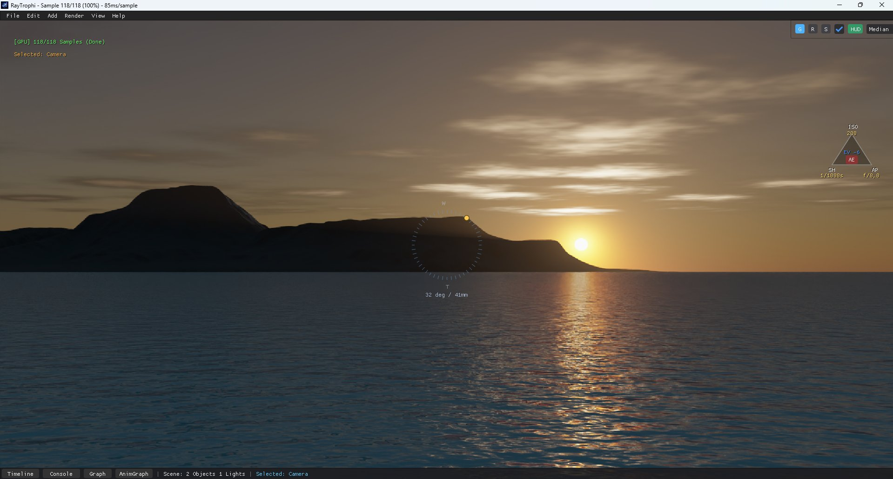
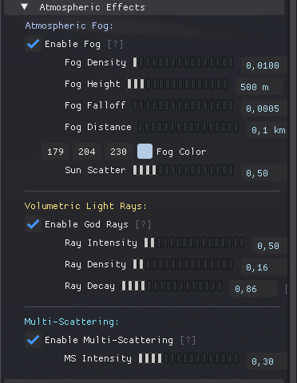

← Back to Home


World & Environment

The World module controls the global lighting, skybox, atmospheric effects, and volumetric clouds.
1. Nishita Sky Model
A physically based spectral sky model that simulates Rayleigh and Mie scattering.
Please save a screenshot of the Sky Settings Panel as
manual/images/world_sky.png
| Parameter | Description |
|---|---|
| Sun Elevation | Height of the sun. Determines time of day (Day/Sunset/Night). |
| Sun Azimuth | Rotation of the sun around the horizon. |
| Air Density | Controls Rayleigh scattering. Heavy air makes the sky more blue/cyan. |
| Dust Density | Controls Mie scattering (pollution/haze). Makes the horizon brighter/whiter. |
| Ozone Density | Effective absorption filter. Turn up for deep blue zenith. |
| Sun Intensity | Brightness multiplier for the sun disk and atmospheric light. |
2. Volumetric Clouds
Ray-marched volumetric clouds with multi-scattering.
Please save a screenshot of the Volumetric Clouds Panel as
manual/images/world_clouds.png
| Parameter | Description |
|---|---|
| Coverage | Amount of clouds in the sky. (0.0 = Clear, 1.0 = Overcast). |
| Density | Optical thickness of the clouds. Higher values block more light (darker bottoms). |
| Absorption | How much light is absorbed inside the cloud volume. Controls the "silver lining" effect. |
| Detail Scale | Frequency of the noise used to carve the cloud shapes. |
| Wind Speed | Speed of cloud movement across the sky. |
3. Atmospheric Fog & God Rays

Please save a screenshot of the Fog / Atmosphere Panel as
manual/images/world_fog.png
| Parameter | Description |
|---|---|
| Fog Density | Base density of the global exponential height fog. |
| Height Falloff | How quickly the fog thins out with altitude. |
| God Rays | Enable volumetric light shafts (crepuscular rays). |
| Ray Steps | Quality of the god ray integration. Higher steps = smoother rays but slower. |